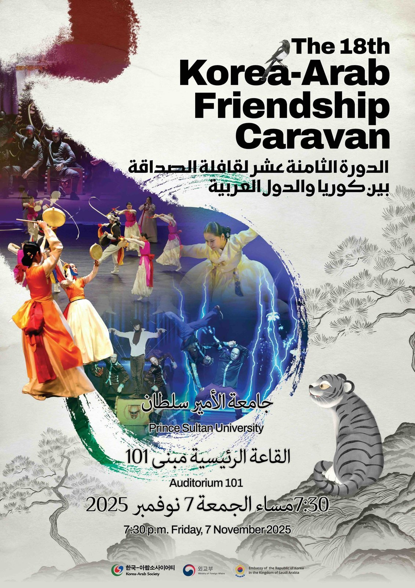
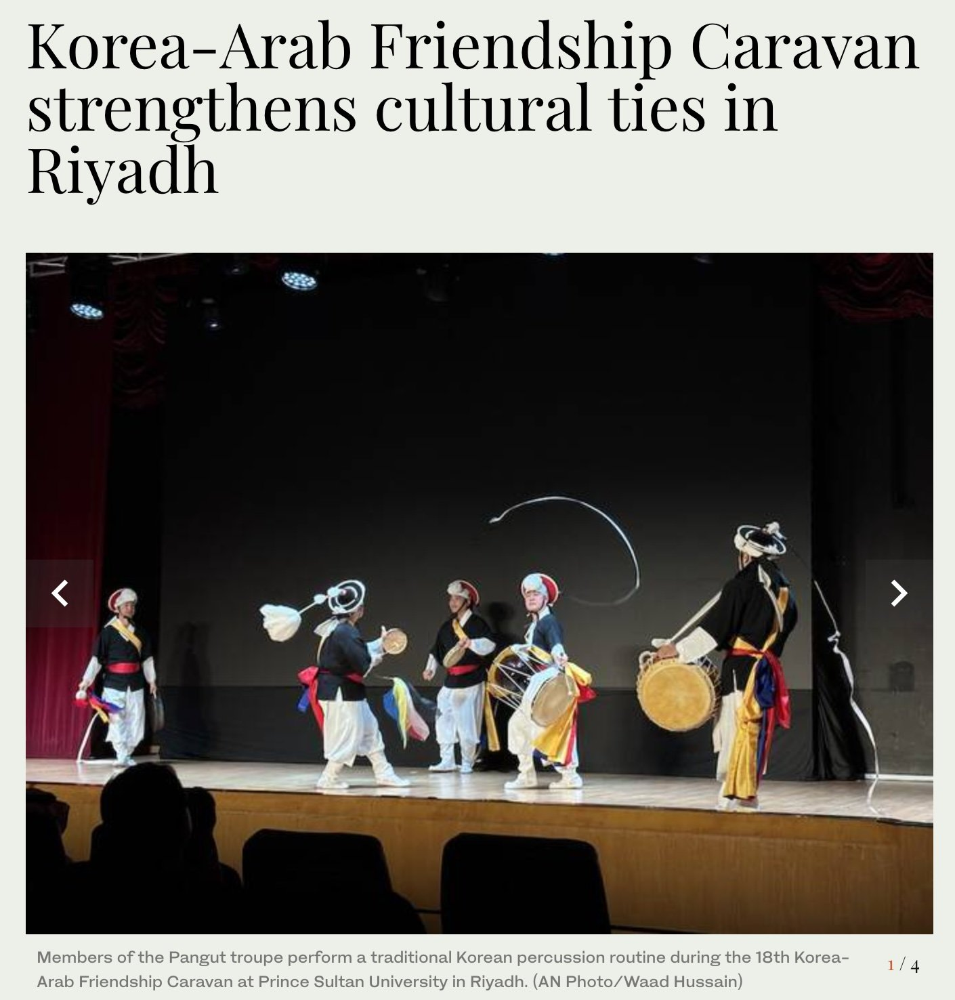
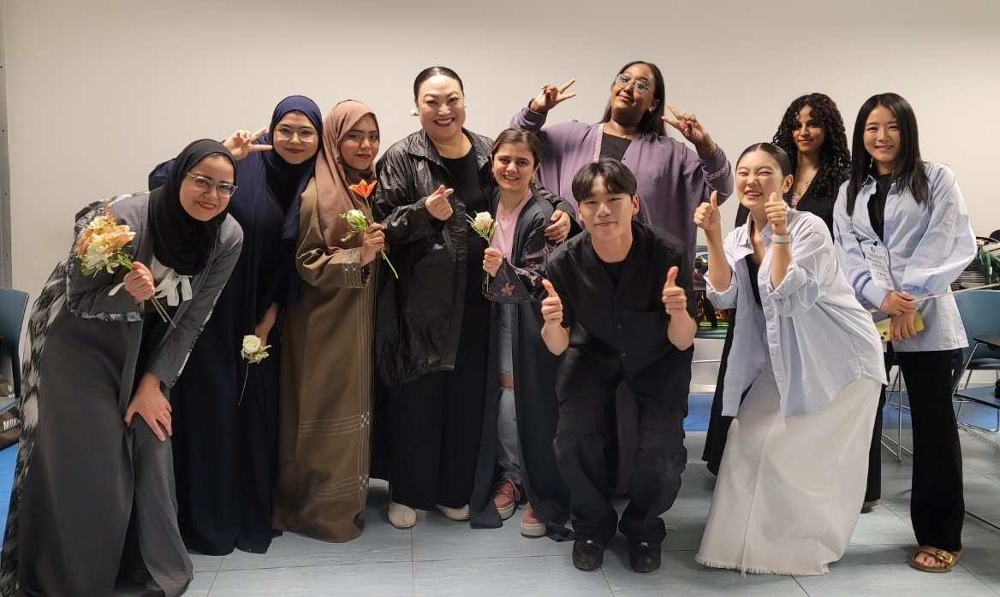
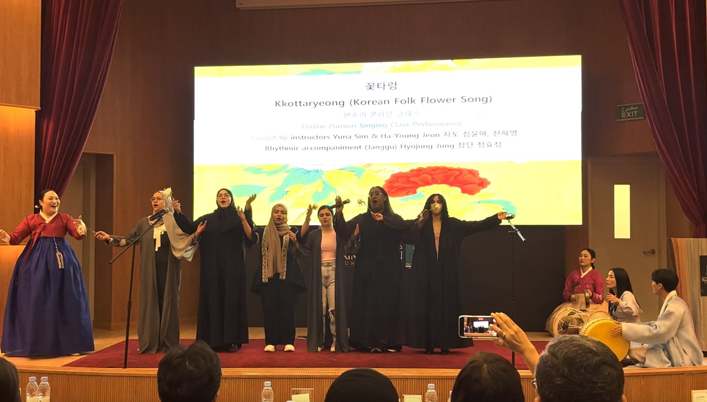

리야드에서 열린 제18회 한국-아랍 프렌드십 카라반
지난 11월 8일, 리야드 프린스 술탄 대학교(Prince Sultan University)에서 제18회 한국-아랍 프렌드십 카라반 공연이 개최됐다. 이 행사는 2008년부터 이어져 온 한국-아랍 소사이어티(Korea-Arab Society)의 대표 문화교류 프로그램으로, 매년 아랍권 주요 도시를 순회하며 한국의 전통·현대 공연예술을 소개해왔다. 올해 리야드 공연에는 판굿, 부채춤, 진도아리랑, 사물놀이 등 다양한 전통 공연과 더불어 익스프레션 크루(Expression Crew)의 비보잉 퍼포먼스가 함께 무대에 올랐다. 현지 매체 《아랍 뉴스(Arab News)》 역시 해당 공연을 보도하며 서로 다른 다섯 가지 공연이 각기 다른 한국 문화의 유산과 정체성을 보여주었다고 전했다. 행사 당일에는 해당 대학교에서 공연뿐만 아니라 리야드 세종학당에서 마련한 한국 문화 체험 프로그램도 함께 진행돼, 관람객들이 보다 다양한 방식으로 한국 문화를 경험할 수 있었다.

▲ 제18회 한국-아랍 프렌드십 카라반 공연 포스터 — 출처: 주 사우디아라비아 한국대사관

▲ 현지 매체 보도 — 출처: 아랍 뉴스(Arab News)
한국 전통예술 × 사우디 여성합창단 협업 공연
올해 5월에는 같은 프린스 술탄 대학교에서 특별한 협동 공연이 진행됐다. 판소리 명창 채수정 교수와 한국 전통음악가들, 그리고 세종학당 리야드 소속 사우디 여성합창단이 함께 무대에 오른 것이다. 이번 협업은 통신원이 직접 기획한 프로젝트로, 공연에 앞서 세종학당 리야드에서 한국 판소리 민요 전문가와 함께 온라인 판소리 수업을 운영하며 사우디 학생들이 장단·발성·가창을 익힐 수 있도록 사전 교육 과정이 마련됐다. 통신원도 한국 현지 판소리 강사진들에게 온라인으로 직접 장구 연주 수업을 받고, 학생들과 연습부터 공연까지 함께 참여했다. 한국 전통문화 공연팀과 사우디 여성합창단은 <꽃타령>과 <강강술래>를 함께 합창하며 사우디 내 최초의 '한국 전통음악-현지 여성합창단 공동 무대'를 만들어냈다. 공연은 관객과 교육기관 관계자들로부터 큰 호응을 얻었으며, 현장에서는 감동으로 눈물을 보이는 사우디 관람객도 있었다. 참여 학생들은 한국 판소리 대가인 명창 채수정 교수와 그의 제자들과 함께 무대에 선 것에 대해 "영광스럽고 잊지 못할 경험이었다"라고 소감을 전했다.

▲ 협동 공연팀 대기실 단체 사진 — 출처: 통신원 촬영

▲ 공연 현장 — 출처: 통신원 촬영
프린스 술탄 대학교-세종학당 리야드 매개 문화교류
5월 협업 공연과 11월 카라반 공연이 모두 프린스 술탄 대학교에서 진행된 것은, 동 대학 내에 세종학당 리야드가 설치되어 있어 한국 문화·한국어 교육 프로그램이 운영되고 있다는 구조적 기반 덕분이다. 이 교육기관 기반의 연결점이 한국 전통예술 프로그램의 연속적인 개최를 가능하게 했으며, 현지 내에서 한국문화 체험과 교육을 연계하는 중요한 플랫폼으로 기능하고 있다. 특히 해외에서의 한류가 드라마·영화·케이팝 등 대중문화 중심으로 확산되는 가운데, 전통예술을 현지 교육기관과 결합해 소개하는 이러한 시도는 한국 문화의 폭을 넓히는 의미 있는 흐름으로 볼 수 있다.
사진 출처 및 참고자료
통신원 촬영
주 사우디아라비아 한국대사관 (2025. 10. 28). The 18th Korean-Arab Friendship Caravan, https://www.mofa.go.kr/sab-ar/rd/m_10974/view.do?seq=759402
《Arab News》 (2025. 11. 08). Korea-Arab Friendship Caravan strengthens cultural ties in Riyadh, arabnews.com
리야드 세종학당 웹사이트, https://ksi-riyadh.org/